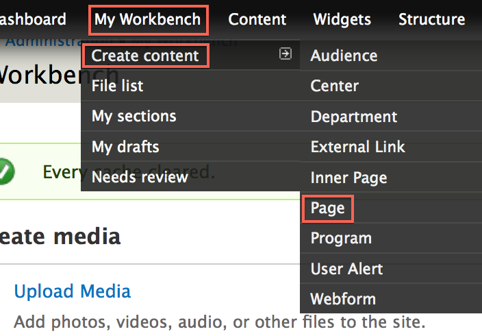
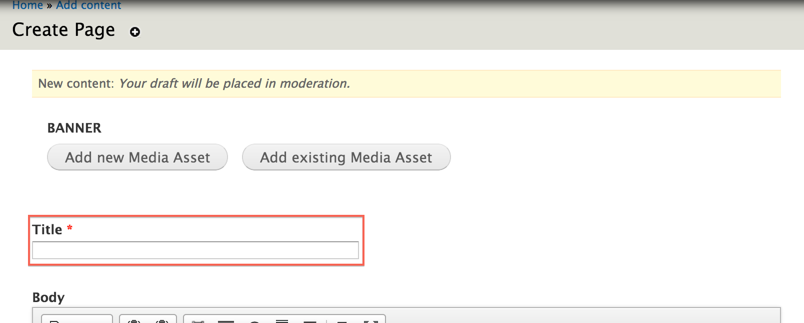
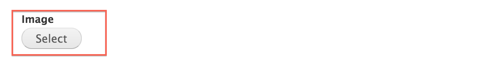
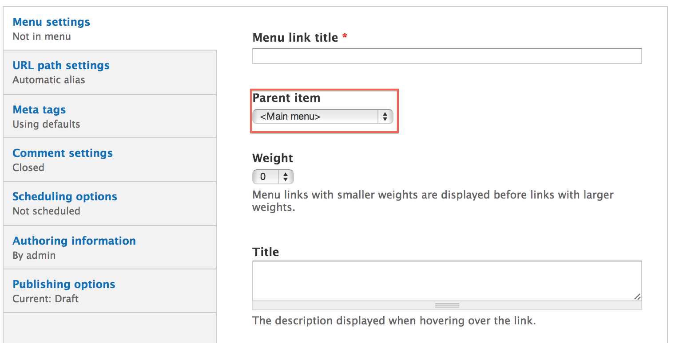
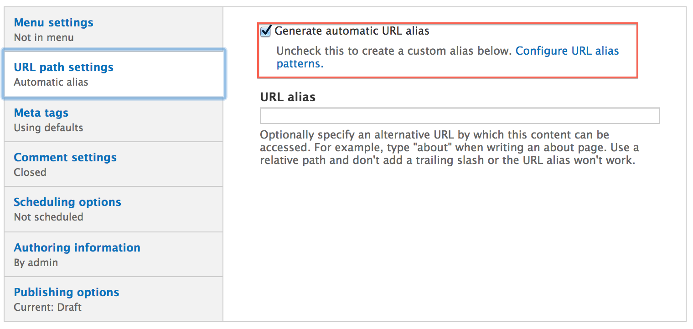
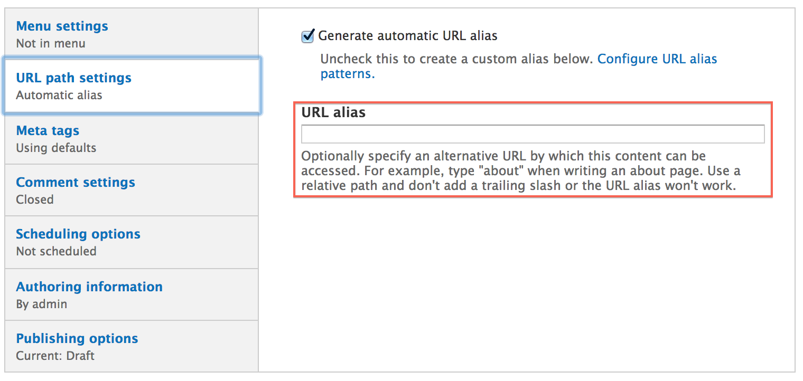

Pages are a content type that can be used to create a page on your site which contains copy and/or widgets. A Page defines a section of the site that can be considered a "sub-site" homepage within that section. Subsequent child pages of that section should be built out using the Inner Page content type. Typically, Pages will be top-level menu items, but from time-to-time it will be appropriate for them to fit farther down in the menu hierarchy. The key with Pages is to use them judiciously when you're attempting to define a section homepage or a single one-off page that doesn't have any children.
In the Administration Menu, navigate to:
My Workbench > Create content > Page

Add a new or existing Banner Slide.

Enter the Title for this page.

Enter the Body of this department. This is the main copy of your page.

Using the editor toolbar, you can add images or format your copy.

Select an Image for this page.

Choose a Menu link title which will be the name of the menu item displayed.

The Parent item is the location where this page will be found in the menu.

More detail on the remaining items in this section can be found in the Menu settings documentation.
By default, the url of this page will be generated automatically. If you would like to customize the url of this page, you can uncheck Generate automatic URL alias.

Then you may enter a custom URL alias

While viewing a page, click the New draft tab located at the top of the page.

Updating a page is very similar to Creating a page. Make the changes you want and then click the Save button located at the bottom of the page.

While viewing a page, click the New draft tab located at the top of the page.
At the bottom of the New draft form, click Delete.

Confirm the deletion by clicking the Delete button.

On the page you want to change the layout for, click the Change this layout button located at the bottom of the page.

Select the layout you would like for this page.

Move content around and once you are satisfied, click Save.

On the page you want to customize, click the Customize this page button located at the bottom of the page.

Make the changes that you want.
For a more detailed tutorial, please read Customizing Pages
Once you are satisfied with the changes, click Save.

Created on January 7, 2014
Last modified on January 9, 2014
Authored by Gray Sadler